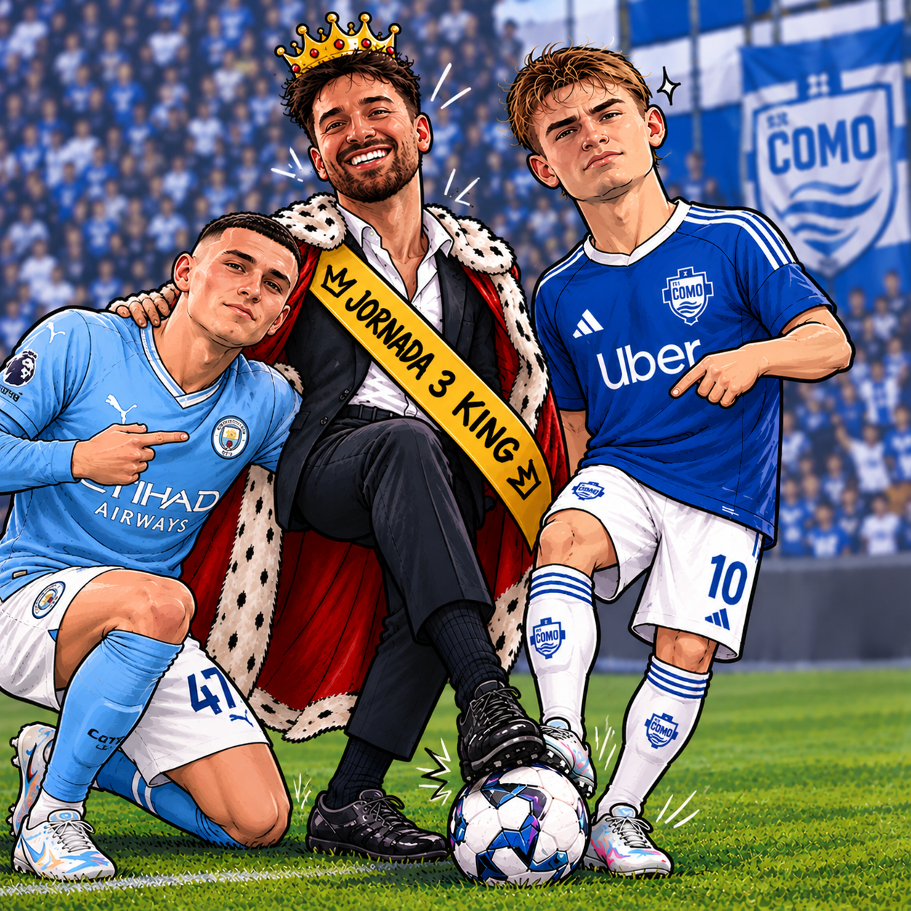

Inscrição
Entrada de 5€ por jogador, paga antes do início da competição. Quem não pagar não entra.
Aqui não há amigos, há treinadores, rivais, especialistas de bancada e candidatos ao título de Chorão da Champions.
Leitura obrigatória antes de começar a chorar.
Entrada de 5€ por jogador, paga antes do início da competição. Quem não pagar não entra.
É obrigatório apresentar uma equipa válida em todas as jornadas. Falhaste? Multa de 1€.
Quem abandonar a competição a meio da época paga 5€ de multa. Não há VAR para fugir disto.
Em cada jornada, o grupo elege o maior chorão, caso exista. No final, o Rei do Choro acompanha o último classificado num penálti.
No final da competição haverá um jantar de condecoração do campeão, em data escolhida pela maioria.
Os candidatos ao título e à dignidade.
Calculada automaticamente a partir dos pontos registados em cada jornada.
| # | Treinador | Pontos | Jornadas | Média |
|---|
Jogos da jornada, horários e resultados por atualizar.
Consulta resultados, vencedores e evolução da liga.
| Jornada | Vencedor | Pontos |
|---|
O registo oficial dos títulos e distinções.
Até hoje, o troféu pertenceu sempre a membros dos DST's. A temporada 2026/27 é a oportunidade para acabar com esta hegemonia ou confirmar que continuam a mandar nisto tudo.
O destaque individual de cada jornada.
Ainda sem registos.
A prova visual de que a Fantasy mexe com a dignidade de qualquer pessoa.

André deixou de chorar, pegou no seu bloco de notas e brilhou. Na Jornada 3 Phil Foden meteu-lhe a coroa e Nico Paz estendeu-lhe a passadeira para uma jornada incrível.
Um registo oficial das desculpas mais fracas da época.
Jornada 3: Tetra — “A vestie está-me a rebentar a fantasy”
Líder atual: Por decidir
Todos os Momentos e Chorões, jornada a jornada.
Ainda não existem jornadas arquivadas.
Área privada: só o administrador pode alterar os dados.
Inicia sessão com o utilizador administrador criado no Supabase. Os restantes visitantes só conseguem consultar o site.
Para ativar a sincronização, configura primeiro o ficheiro config.js.
Guarda uma entrada por jornada. Para as imagens, coloca os ficheiros na pasta images do GitHub e escreve, por exemplo, images/momento-jornada4.png.
Nota: a versão pública lê os dados da base de dados; só uma sessão com permissão de administrador pode gravar alterações.